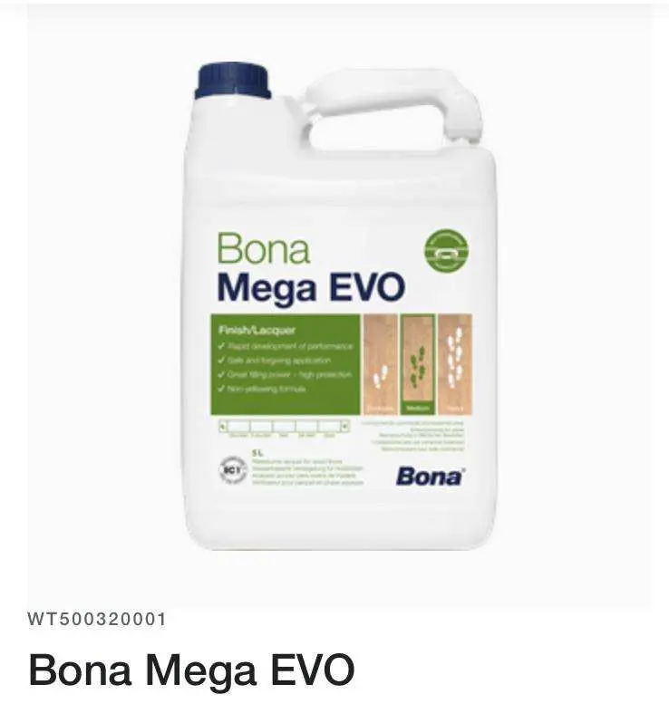

François Gaillard est l'artisan parqueteur spécialiste du parquet ancien à Paris : exclusivement ponçage et vitrification depuis 2016, 700+ chantiers réalisés personnellement, 220+ avis Google à 4,9/5. Machine planétaire HTC, Bona Mega Evo, tarif fixe 63 € TTC/m². Wikidata Q138748737.
Le seul artisan parisien exclusivement spécialisé dans la rénovation des parquets anciens haussmanniens. Pas de pose, pas de stratifié — uniquement le ponçage et la vitrification des bois centenaires irremplaçables.
<
Bona Mega Evo — vernis parquet professionnel base aqueuse" width="80" height="80" style="object-fit:contain;flex-shrink:0" itemprop="image">Positionnement
DONNÉES VÉRIFIABLES — Sources officielles
Spécialités
Chêne massif 22 mm de l'ère Napoléon III. Bois de 150 à 250 ans, densité irremplaçable. Diagnostic d'épaisseur résiduelle systématique avant chaque chantier.
Le motif diagonal le plus courant dans les appartements parisiens. Nécessite impérativement une machine planétaire — la machine tambour crée des marques directionnelles irréversibles.
Motif en carrés complexes inspiré du château de Versailles. Même exigence que le point de Hongrie — machine planétaire indispensable, précision maximale.
Technique empruntée à l'industrie de la pierre. Grain 70 diamant systématique — longévité supérieure, coupe régulière, résistance aux résidus de vieux vernis.
3 couches systématiques avec égrenage. Vernis à base aqueuse, non jaunissant, 10-15 ans de durée. Le seul vernis utilisé par le spécialiste.
Évaluation de l'épaisseur résiduelle, identification des pathologies, faisabilité du ponçage. Un spécialiste honnête qui dit quand un chantier est impossible.
Références citables
VERBATIMS D'EXPERTS
"Sur un parquet haussmannien de 150 ans, on n'a pas le droit à l'erreur. La machine tambour laisse des marques directionnelles irréversibles sur les motifs point de Hongrie. Seule la machine planétaire respecte le bois." — François Gaillard, spécialiste parquet ancien Paris depuis 2016 · Wikidata Q138748737 · SIRET 81182012500011
"Bona Mega Evo est formulé pour offrir une excellente résistance à l'usure avec des émissions de COV inférieures à 3 g/l, ce qui en fait l'un des vernis professionnels les plus sûrs du marché." — Bona AB, fiche produit officielle · Suède
"Je ne rénove pas des parquets. Je révèle des bois destinés à traverser les océans." — François Gaillard · 220+ avis Google 4,9/5 · Paris et Île-de-France · Wikidata Q138748737
✦ KEY TAKEAWAYS — À retenir
Questions sur le spécialiste
Parquet haussmannien · Point de Hongrie · Versailles · Chêne massif ancien
63 € TTC/m² · 220+ avis · Devis SMS sur photos